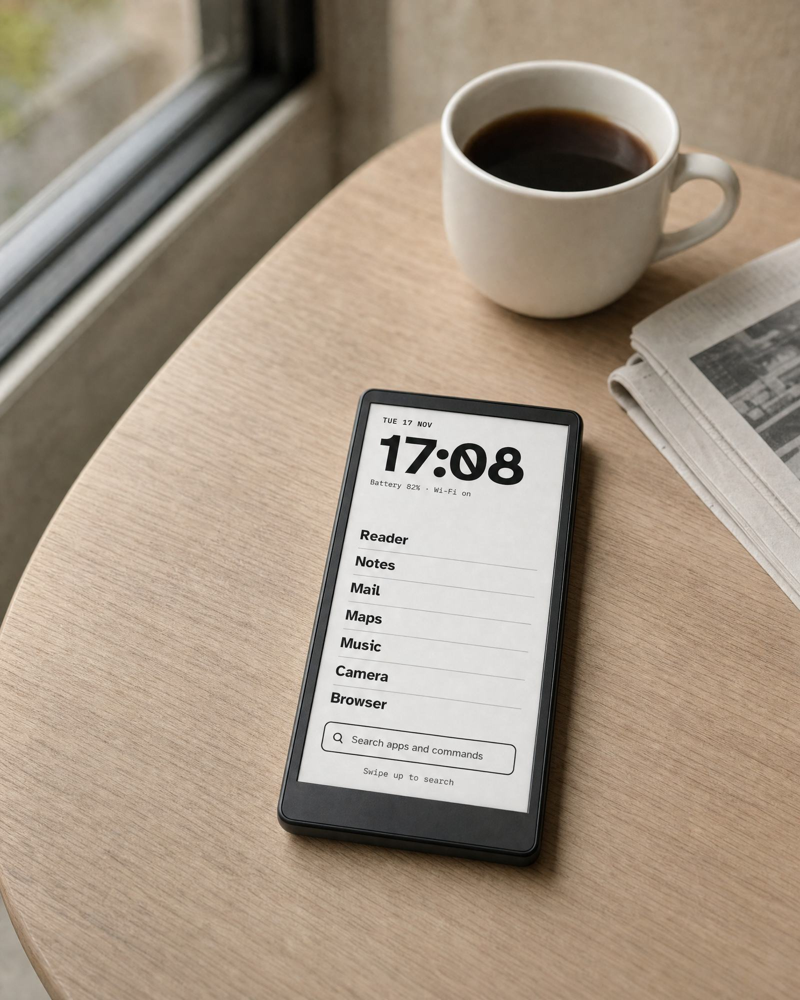
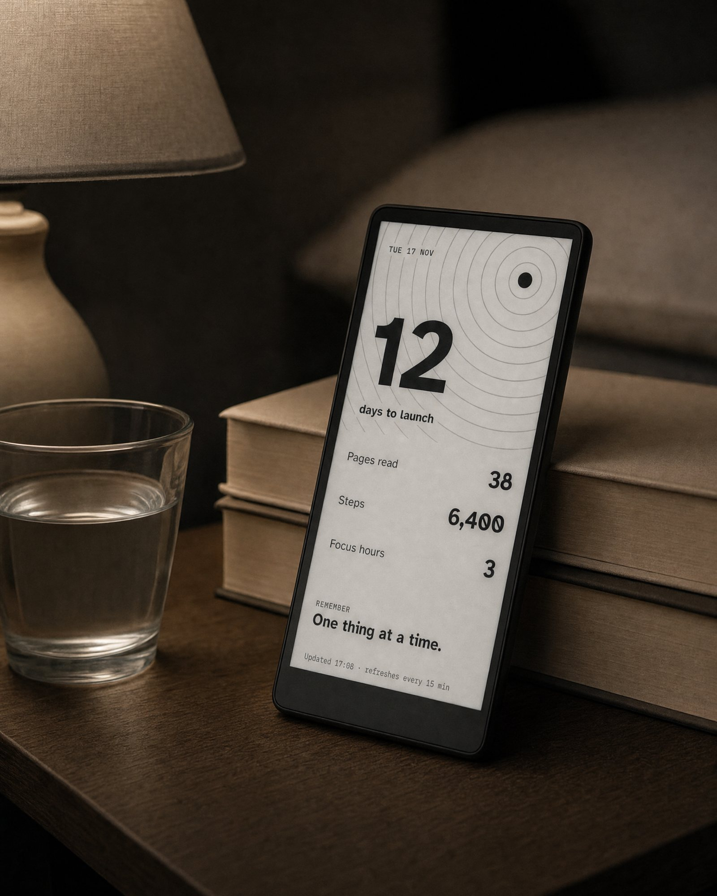

An Android launcher made of text · research preview
Tachyon
Nothing we tested starts faster.1
Cold start in 72 ms. The next launcher on the same clean emulator: 167 ms.2 You decide what to open, type two letters, and you can be in the app.6 It was built on an e-ink phone, whose screen then takes 120–450 ms to show you.
Scroll to run the clock yourself, or press Play, top right. Arrow keys step through the chapters.
Cold start: 72 milliseconds, median of 30 runs on an emulator.
That was a cold start. You probably missed it.
What it's for
You have to know what you want.
Home is a clock and a few app names. No icon is there to catch your eye, so opening an app starts with deciding to.
Then you type. Two letters can be enough,6 and when only one app matches, it opens.
Nothing animates, so on e-ink there is nothing to turn off. One repaint per action, then it stops drawing.
It is also quick. That is the part we could measure.
The 15-second version
The whole page, with drums.
The world's fastest Android launcher?
We can't prove that.
We can prove this.
Cold start · whole field
Thirteen launchers. One starting gun. Scroll to run the clock.
First of 11 with a valid cold start. 1.45× ahead of the next.3
Keyboard ready · finger down to keyboard at rest
Keyboard up in 84 ms. The best rival takes 276. With animations off it's a tie.4
Idle memory · one square = 1 MB
14 MB at rest. The next-lightest launcher uses 2.4× more.5
Search
Two letters. Three steps. No Enter.6
There is no app drawer. Search is the drawer. Type part of a name, or its initials, and the best match sits right above your thumb.
- Type
vk, get Viking Kettle. Tachyon was the only launcher of 13 that launched from an acronym without Enter: 3 steps. KISS and Pie Launcher needed 4. Nine never launched it. One opened the wrong app.6 - Zero wrong launches in six test queries. Three rivals opened something you did not ask for at least once.6
- It forgives one typo now, and only offers. In the benchmark
mqrlinfound nothing, and Pie Launcher found Marlin Ferry. Credit where due. The preview build now offers a title one typing mistake away and waits for Enter; it never opens a near miss by itself. The scorecard keeps the loss until that is measured again.
The scorecard
Where it wins. Where it ties. Where it loses.
All of it, because a speed claim you can't check is just a mood.
| Metric | Tachyon | Best rival | Result | Measured how |
|---|---|---|---|---|
| Cold start, whole field | 139 ms | Kvaesitso 201.5 ms | Win · 1.45× | full-2, 11 valid of 13, 0x, n=30older build, busy host |
| Cold start, clean host | 72 ms | Olauncher 167 ms | Win · 2.3× | goal-final, 3 launchers, 1x, n=30 |
| Keyboard ready, animations on | 83.5 ms | KISS 276.3 ms | Win · 3.3× | goal-final-kbd, 3 launchers, 1x, n=20 |
| Idle memory | 14.3 MB | Pie 35.0 MB | Win · 2.4× | full-2, 13 launchers, n=3 |
| Wrong apps launched from search | 0 | 3 rivals: wrong app 20 of 20 times on a query | Win | full-2 + changes-1, 6 queries |
| Keyboard ready, animations off | 79.3 ms | KISS 77.2 ms | Tie | goal-final-kbd, 0x, n=20 |
| HOME button, first frame | 19.6 ms | Olauncher 20.4 ms | Tie | goal-final, 1x, n=30n=200 run: not separable within about ±3 ms |
| HOME button, settled | 263.6 ms | Olauncher 264.2 ms | Tie | goal-final, 1x, n=30 |
| Warm start | 24 ms | MinimalSF 22 ms | Tie | goal-final, 1x, n=30 |
| Hot start | 17 ms | Olauncher 15 ms | Behind · 2 ms | goal-final, 1x, n=30the 95 % interval of the difference excludes zero |
| APK size | 399 KB | Pie 337 KB | Behind | file size of the preview build |
| One-typo query | not found | Pie finds it | Behind | changes-1, 20 of 20the preview build offers near misses; not measured again |
| On a real phone | measuring | – | Unknown | the launcher keeps a perf log on the device |
Why it's fast
0.7 ms of a hot start is ours. The rest is Android.
A hot start takes about 17 ms. Half of that is waiting for the display to tick. We traced where every millisecond goes, then stopped doing everything that wasn't needed. You will not feel 0.7 ms. We counted it anyway.
One View
Every screen is drawn by a single custom View. No Compose, no AppCompat, no Material.
Zero libraries in search
The search core is plain Kotlin with no dependency besides the standard library.
A CPU window
Home is drawn straight into a buffer. No GPU context to set up before the first frame.
One repaint
A key, a selection move or HOME costs one frame. Launching an app costs none.
Kept only if measured
One change at a time, benchmarked, reverted if not faster. A 16-bit window and a retained frame both lost, so both went.
120 budgets
The build fails when any of 120 performance budgets is exceeded.
The fine print, in large print
This is an emulator. Its GPU is software. That helps us.
Most of the cold-start lead comes from drawing on the CPU, on a machine where everyone else's GPU set-up is unusually slow. Here is the same Tachyon APK drawn three ways.
Give Tachyon a hardware window and it still starts 13.5 ms ahead of Olauncher. Make it draw everything through the software GPU and it is 215 ms behind. On a phone with a real GPU the gap will be smaller, by an amount this benchmark cannot tell.7
Real device
Measuring.
Tachyon was built on and for a Boox Palma 2 Pro, an e-ink phone, and that is the only place it runs every day. Emulator milliseconds are not phone milliseconds: on e-ink the panel's own refresh, 120–450 ms, comes on top of everything. It now keeps a performance log on the device. When there are enough rows, the numbers land here: Tachyon only, daily use, never mixed into an emulator chart.
The first rows, from one day on the phone (17 November, animations off): a search query takes 0.5 ms (n = 15), a keystroke to its redraw 27.5 ms (n = 12), HOME to the next frame 49.5 ms (n = 5), process start to first draw 157 ms (n = 3). These are the launcher's own timings, before the panel refreshes. Far too few to call anything.
The product
Black on white, or white on black. Text only. Made for e-ink.
In the wild, as imagined
A phone that waits for you.


New in the research preview
Someone else installed it.
The first person outside the project put it on a phone with a camera hole in the screen, and sent three requests the same morning. All three are in this build.
Dark theme
White on true black, or follow the phone's setting. Type > theme. The start-up screen changes with it, so nothing flashes white.
Camera cutouts
Text now starts below a notch or a punch-hole camera. The phone it was built on has neither, so nobody had noticed.
Pin an action, not just an app
"Firefox: New tab", one chat, one channel. Hold a search result and choose Pin to home. Android keeps a pinned shortcut alive after the app stops listing it.
Roadmap
Open source, and a real release. Soon.
Two promises: the code will be open, and so will the benchmark that produced every number on this page. The rest is a plan, in the order we mean to do it.
Now
Research preview
The build on this page. It works every day on two phones, and it still assumes it is on the author's.
Next
Ready for a stranger's phone
A first run that does not start with someone else's pinned apps. A permanent package name. Android versions older than 15. Numbers from real phones, next to the emulator's.
Then
Open source and a public beta
The launcher's code and the benchmark harness in public, with builds you can follow from the repository. App stores after that.
After
A config you can hack
Everything already lives in one JSON file: pins, gestures, keywords, modes and your own actions. Next come a published schema, importing a config from a link, and packs of ready-made actions to share. No plug-in may ever cost a frame.
Also
Tachyon for iPhone
iOS does not let an app be the home screen. So the iPhone version is the search alone: one press of the Action Button, two letters, and you are in the app. A first build exists. The video is a design preview.